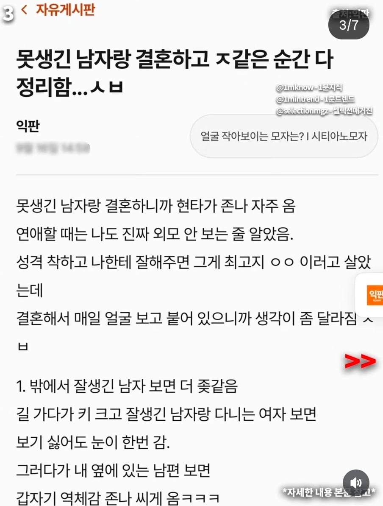
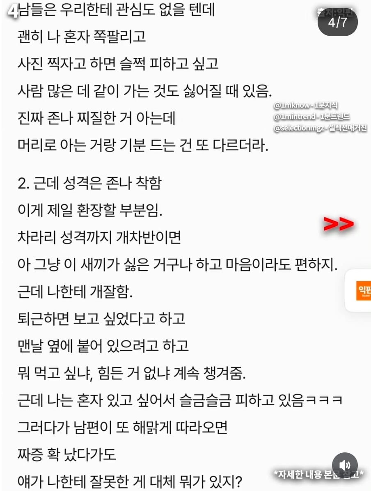
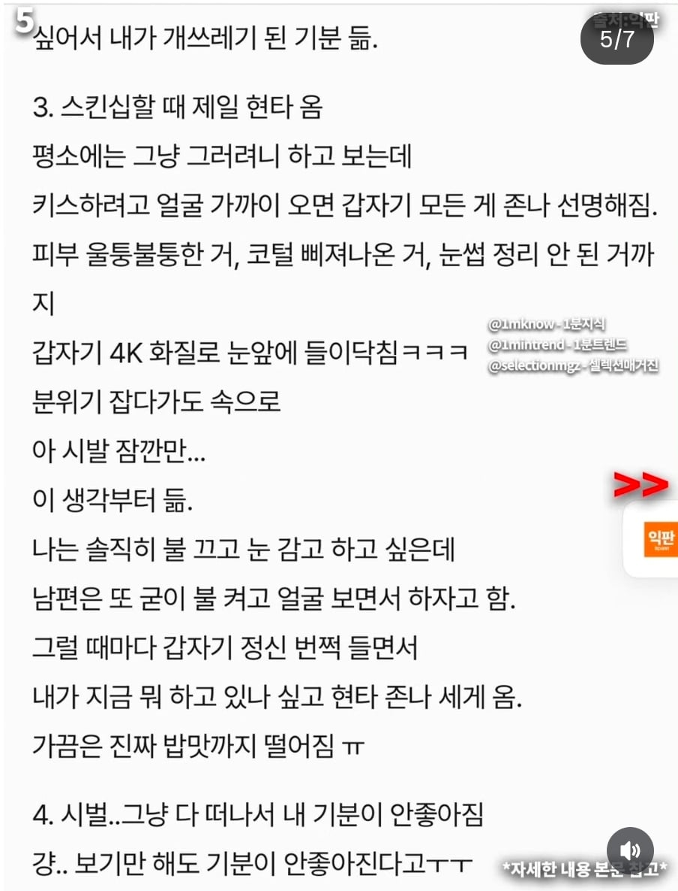
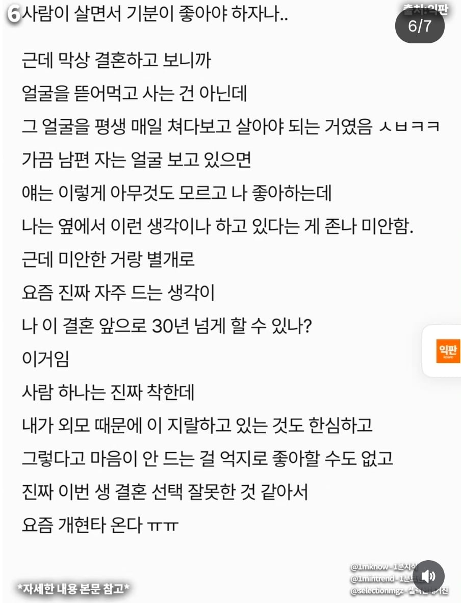

남자나 여자나
결혼시 아무리 외모 안 따진다고 해도
키스할때 불쾌감을 느끼지 않을 외모는 되어야 함




남자나 여자나
결혼시 아무리 외모 안 따진다고 해도
키스할때 불쾌감을 느끼지 않을 외모는 되어야 함
아니 어렵냐 눈썹이야 깍아주면 되고 코털가위 사주고 피부 울퉁불퉁은 뭐 피부과좀 보내고 해야지
평생 꾸며본 적 없는 사람 원망만 해서 해결되나
밥맛떨어질정도면 진짜 심각하게 생겼나본데...
너도 그 정도인 거야 ㅋㅋ
쓰레기 맞아 걀혼 왜 했음?
남자만 개불쌍.
아니 근데 털정리는 좀 하자..
니가 관리시켰어야지 니 남편인데